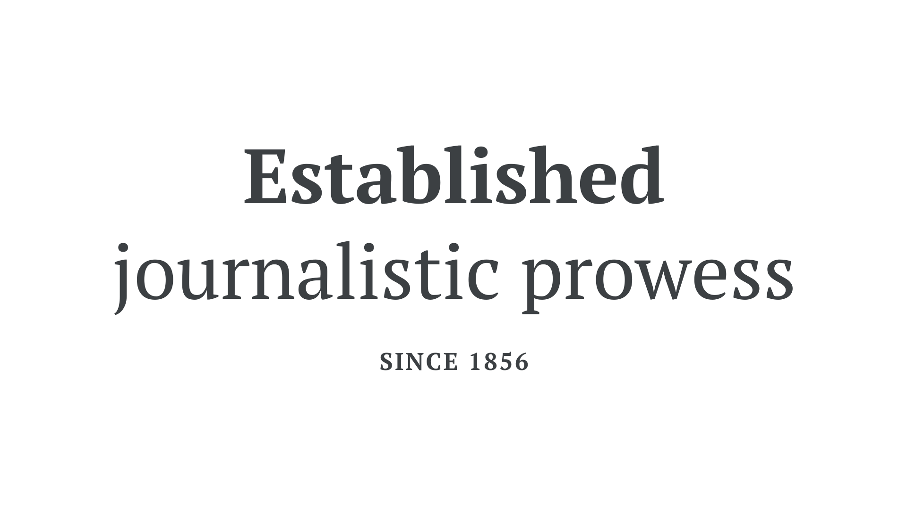

Transitional, or Neo-classical
By Google Fonts Knowledge contributors · Google Fonts Knowledge.
Original article · Source on GitHub · CC BY-SA 4.0. Text, illustrations and existing credits reproduced from the licensed Knowledge repository. Open Shelf adapted the layout and links; these adaptations are also CC BY-SA 4.0. No endorsement implied.
Transitional or Neo-classical (sometimes stylized as Neoclassical) is a historical classification for typefaces that reference elements of human penmanship—à la Humanist faces. But they do so in a more ordered and structured form, usually with a higher stroke contrast, a more upright axis, and more symmetry. Didone (or Modern) faces are often interchangeable with this grouping, too, although they usually exhibit an even greater stroke contrast.

It’s important to note that, like all historical classifications, transitional typefaces that fit this style don’t necessarily come from this period in history. Examples of transitional typefaces include Merriweather, PT Serif, and—on the Didone end of the spectrum—Playfair Display.